Assainissement des propriétés privées, en Île-de-France
Votre assainissement est non conforme ? Nous réalisons les travaux.
Mise en conformité, raccordement au tout-à-l'égout, regards, canalisations, fosses. BAB intervient chez vous, sur la partie privée du réseau, de la maison jusqu'à la limite de propriété.
01 89 48 09 64 Vous préférez téléphoner : du lundi au samedi, de 8 h à 19 h.
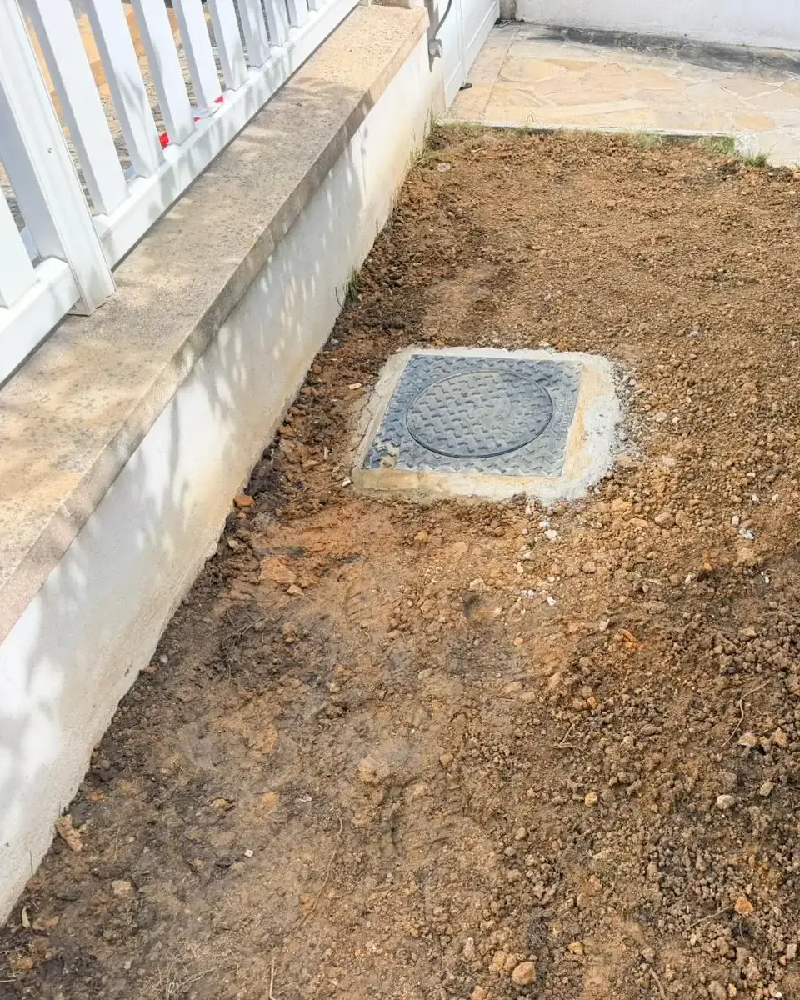
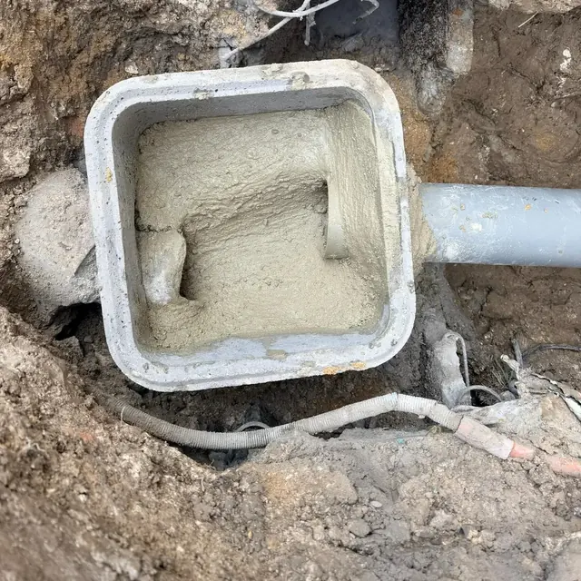
- Partie privée du réseau uniquement
- Visite sur place, puis devis écrit et gratuit
- Les travaux commencent après votre accord
- Entreprise de Saint-Mandé (94), SIREN 933 127 995
Vous avez reçu un rapport
Un rapport non conforme, cela se corrige.
Vous vendez votre maison, ou la mairie vous a écrit. Le contrôle est fait par le service d'assainissement de votre commune. Nous, nous réalisons les travaux qu'il demande, chez vous, sur la partie privée.
- Le branchement au réseau public
- La séparation des eaux usées et des eaux de pluie
- Une fosse ou une micro-station, pour une maison non raccordée
Ce qui se passe ensuite
- Vous envoyez le rapport. Deux minutes suffisent.
- Nous le lisons, puis nous vous rappelons.
- Visite sur place, puis devis détaillé, poste par poste.
Nos prestations
Ce que nous faisons, côté privé.
De la maison jusqu'à la limite de propriété. Le réseau sous la rue relève de la collectivité.
Après un contrôle, avant une vente
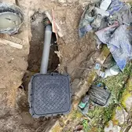
Mise en conformitéNous corrigeons ce que le contrôle a relevé.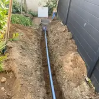
Raccordement au tout-à-l'égoutDe la maison jusqu'à la boîte de branchement.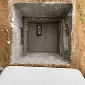
Canalisations et regardsCréation, remplacement, séparation des eaux usées et pluviales.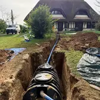
Fosses et micro-stationsPose, remplacement ou mise hors service.Voir, nettoyer, entretenir
Inspection caméraVoir l'intérieur des canalisations, avec un rapport et des images.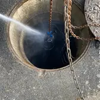
Curage des canalisationsNettoyage à haute pression des canalisations et des regards.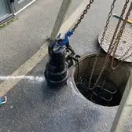
Pompes de relevageInstallation, remplacement et entretien.Autres travaux
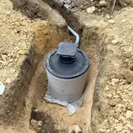
Eaux de pluie à la parcellePuisard, tranchée d'infiltration, drainage.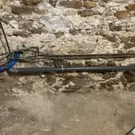
Canalisations en fonteColonnes et conduites anciennes remplacées par des neuves. Cuve à fioulNeutralisation ou retrait d'une ancienne cuve.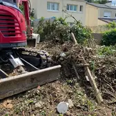
TerrassementTranchées, jardin, évacuation des terres.Sur un de nos chantiers
De l'allée en terre à l'allée bétonnée.
Quatre photos du même chantier, en Île-de-France : une canalisation posée sur toute la longueur de l'allée, raccordée, puis l'allée refaite avec ses regards accessibles.
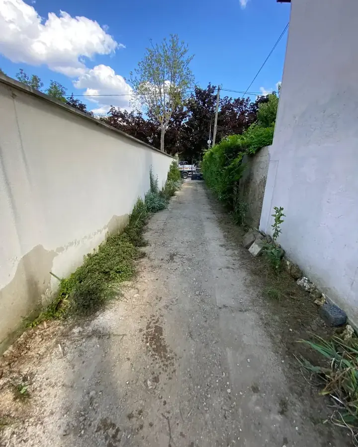
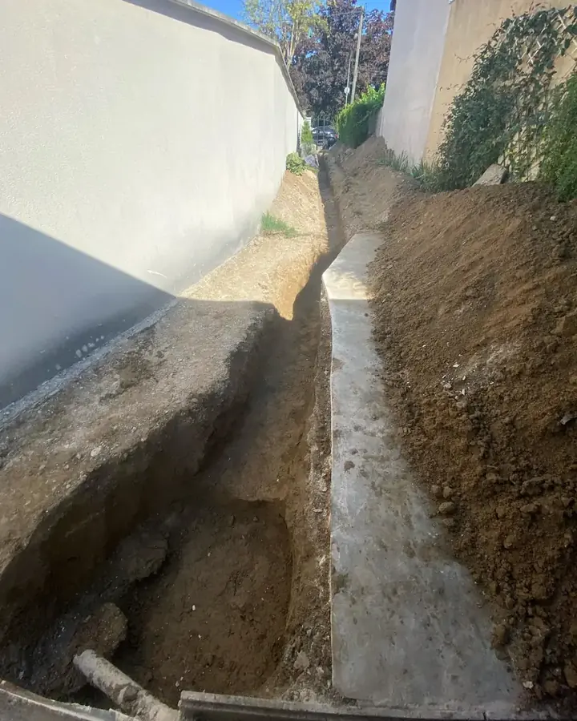
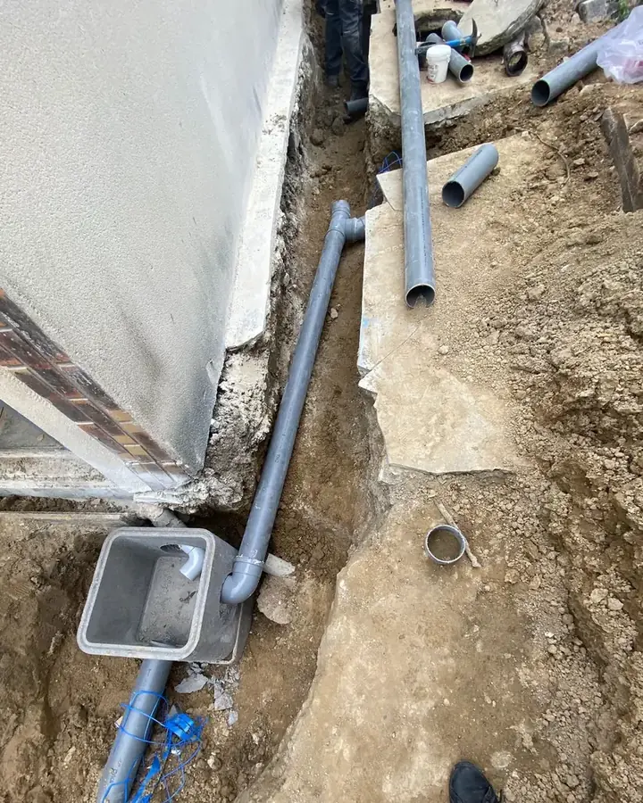
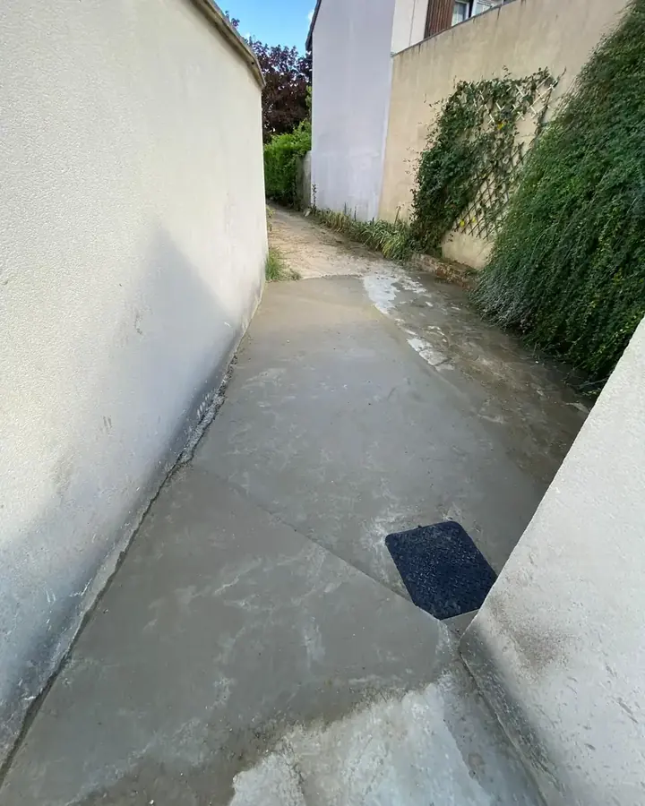
Faites glisser pour voir les quatre photos.
Une mise en conformité, à Villecerf (77).
Un regard avec cunette pour raccorder les eaux usées, un tampon scellé, puis le terrain remis en état avec deux tampons d'accès.
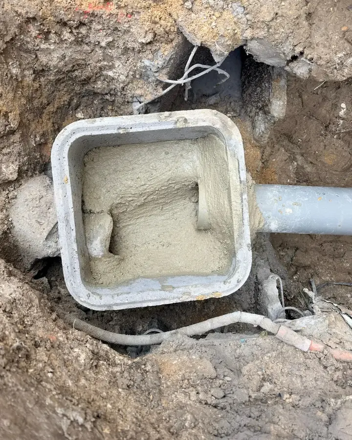
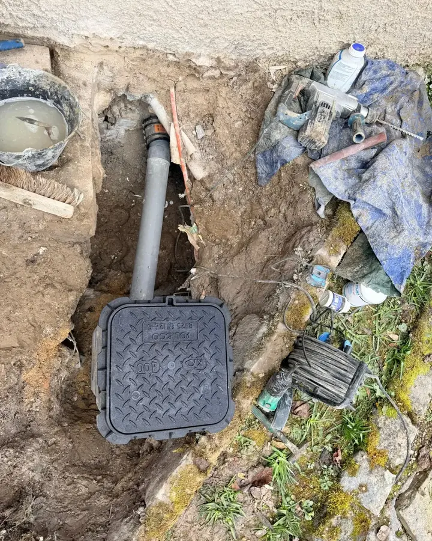
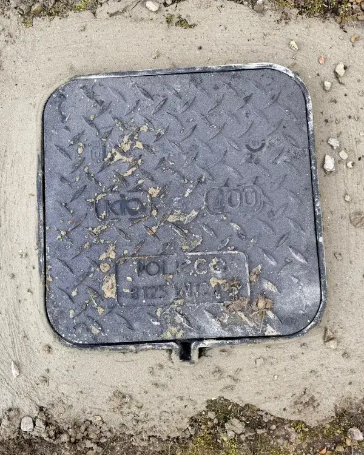
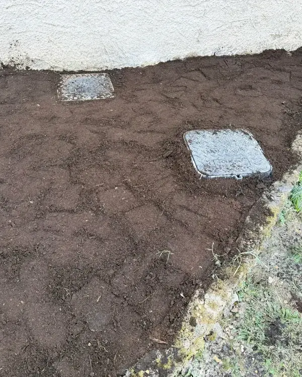

Facultatif, une minute de lecture
Comprendre votre installation.
Coupe de principe, dimensions indicatives. À gauche de la limite, c'est chez vous : c'est là que nous intervenons.
Faites glisser le dessin pour le voir en entier.
- Tampon et regard de visitePour contrôler, curer et passer la caméra.
- Canalisation d'eaux uséesEn pente vers la rue, posée sur un lit de sable.
- Eaux pluviales, réseau séparéElles ne passent pas par le regard des eaux usées.
- Boîtes de branchementEn limite de propriété, une par réseau.
- Limite de propriétéCôté privé, c'est chez vous ; c'est là que nous intervenons.
- Réseau public, sous la rueIl relève de la collectivité.
Comment ça se passe
Quatre étapes, sans surprise.
Aucun prix n'est donné sans visite. Le devis écrit est gratuit et sans engagement.
- Vous nous écrivez ou vous appelez
Avec votre rapport de contrôle ou quelques photos, si vous en avez.
- Nous vous rappelons
Du lundi au samedi, de 8 h à 19 h, pour comprendre la situation.
- Nous venons voir
Une visite sur rendez-vous, pour voir le terrain, les regards et les canalisations.
- Vous recevez un devis détaillé
Poste par poste. Les travaux commencent seulement après votre accord.
Le devis tient compte de l'accès, du linéaire, du sol et des travaux nécessaires.Badr-Eddine Belaïd, fondateur de BAB Assainissement, entreprise créée à Saint-Mandé en 2024.
Où nous intervenons
Toute l'Île-de-France, depuis Saint-Mandé.
Les questions qu'on nous pose
Qu'est-ce que la mise en conformité d'assainissement ?
C'est corriger ce qu'un contrôle a relevé sur votre installation : branchement au réseau public, séparation des eaux usées et des eaux pluviales, fosse ou micro-station pour une maison non raccordée. Le contrôle est fait par le service d'assainissement de votre commune ; nous réalisons les travaux sur la partie privée.
Comment est calculé le prix d'un raccordement ?
Le prix dépend de la distance entre la maison et la boîte de branchement, de la profondeur, du terrain et des regards à créer. Nous l'établissons par un devis détaillé, poste par poste, après avoir vu les lieux.
Sous quel délai pouvez-vous intervenir ?
Nous rappelons du lundi au samedi, de 8 h à 19 h, puis nous fixons une visite sur rendez-vous. Le planning des travaux est indiqué avec le devis, selon le chantier.
Prenez-vous en charge les démarches administratives ?
Nous vous aidons à réunir ce que demande le service d'assainissement de votre commune (rapport de contrôle, plan, photos, description des travaux) et nous vous remettons les éléments utiles après les travaux. Les travaux sous la voie publique relèvent de la collectivité.
Quelle différence entre fosse septique et fosse toutes eaux ?
La fosse septique ne reçoit que les eaux des WC ; la fosse toutes eaux reçoit l'ensemble des eaux usées de la maison. Une ancienne fosse septique est souvent relevée lors du contrôle avant une vente.
Comment se déroule une inspection caméra ?
Une caméra est passée dans la canalisation depuis un regard ou une ouverture ; elle montre l'intérieur en direct : fissures, racines, dépôts, contre-pentes, raccords décalés. Nous vous remettons ensuite un rapport avec les images.
Parlons de votre installation
Le plus simple est souvent d'appeler.
01 89 48 09 64Du lundi au samedi, de 8 h à 19 h. 14 avenue du Général de Gaulle, 94160 Saint-Mandé.
Ou décrivez votre besoin en quelques mots.
Regard qui déborde, odeur, écoulement lent, raccordement, travaux. Nous vous rappelons.